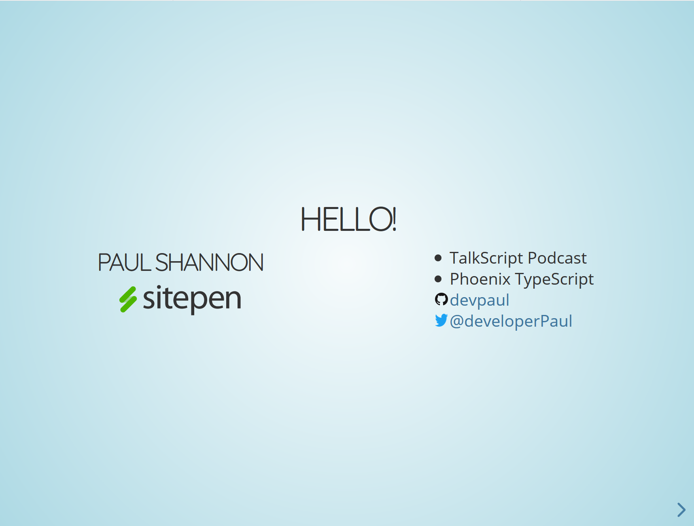

Hello!
Paul Shannon

- TalkScript Podcast
- Phoenix TypeScript
- devpaul
- @developerPaul
A Step Into Virtual Reality
VR was released 4 years ago
So where are we now?
Virtual Reality
Fad
or
Future?
Domestication Theory
Euphoria
Love/Hate
Transparency
How does technology become domesticated?
- Value
- Friction
3D TV

Value
More engaging
Friction
3D glasses
Mobile Phones
Value
Communicate Anywhere
Friction
Battery life, size, cost, signal
Virtual Reality

Value
Presence and Agency
Friction
optics, control, UX, wires
Virtual presence
is VR's irreplaceable value
Omnipresent
Live and Real virtual talks
Slides
RevealJS + WebSockets
Producer
Dojo + WebRTC (screen sharing) + WebSockets
Client
AFrame + WebXR + Dojo + WebSockets
Server
NodeJS + webserv + WebSockets
Demo Time
vr.devpaul.com
Present across time and space
vr.devpaul.com
Takeaways
VR will succeed based on its ability to provide presence and agency
its value must be greater than other options
Browsers can deliver good VR experiences
no app to download and phones and desktop support reduces friction
VR is already being used in niche markets
architecture, medical, games, employee training
AR may overcome VR someday
(but AR needs to replace the value of a phone to become domesticated)
The Future
Telepresence
With Agency
Multi-located Events
live & recorded: Holograms and VR
VR is at a viable place
Right now is the time to be an early adopter
Thanks!
 @developerPaul
@developerPaul